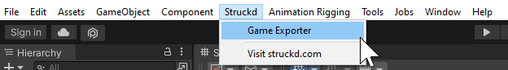
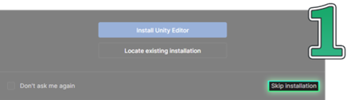
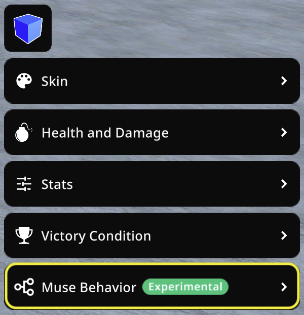

Struckd 停了，但它迭代出来的那套游戏做工具思路还活着
从视角系统到 Loadout，再到最后的 Game Exporter，Struckd 用几年时间走完了一条「从零门槛到衔接专业生态」的路线——然后它停了。
现状：一个已经停止服务的游戏制作 App
我写这篇文章的时候，Struckd 已经停了。
官方的关闭公告里没给太多理由——就是说服务终止了，让大家记得手动取消订阅，然后留了一个 Game Exporter 工具帮用户把草稿迁移到 Unity。App Store 和 Google Play 上已经搜不到它，但订阅扣费的提醒还在继续给一些人发推送，这也是为什么文档里专门有一篇讲重复扣款退款的故障排查。好在第三方整理的官网上还保留着一些核心信息，不至于完全断了线。
但如果把 App 本身抛开，只看它留下来的文档和那些还在 Unity 里跑的迁移项目，你会发现这个产品在停之前其实已经走到了一个很有意思的位置——它用一种完全移动端、零代码的方式，把"做游戏"这件事的门槛压到了几乎可以忽略不计，然后在生命的最后阶段又做了一件更聪明的事：给那些已经上手的用户搭了一座通向专业引擎的桥。
这不是一条常见的产品路线。大多数面向非专业用户的创作工具要么一直停留在玩具阶段，要么彻底转型成专业工具丢掉初心。Struckd 走了第三条路——先让你进来，再给你留出去的门。
来路：从"在手机上搭游戏"到一个像样的创作工作台
我翻了翻能找到的文档记录，最早能看到的 Struckd 版本已经具备了一个完整的游戏制作闭环：创建工作台、拖放资产、设置角色参数、直接在手机上试玩。它的核心主张一直很明确——你不需要懂任何编程，在手机上就能做出一个能玩的多人游戏。
早期：把游戏编辑器塞进手机
最早的版本我没有找到完整的 changelog，但从文档里一些"默认行为"的描述反推，Struckd 从第一天起就把"移动端原生体验"放在了第一位。视角系统就是一个很好的例子——鸟瞰、第一人称、第三人称三种视角直接绑在可玩角色的参数面板上，选中就能切，不需要写脚本也不需要调相机参数。

这件事放在今天看似乎没什么稀奇，但你想想在 Struckd 之前，想做一个能切换视角的多人对战游戏，最低门槛是什么——装 Unity、写相机控制脚本、调网络同步、打包部署。Struckd 把整个流程压缩成了在手机上拖拖点点。
这个阶段的产品定位非常清晰：它不是一个"简化版 Unity"，它是一个"让从来没做过游戏的人也能在手机上跟朋友开一局的 App"。
中期：Loadout 系统出现，平衡性开始被认真对待
Loadout 系统是我在struckd文档里能看到的第一个明显带有"进阶设计者思维"的功能。它不是一个"让你多放几把枪"的功能，它是一个全局武器白名单——开启之后，只有清单里指定的武器才会在游戏里出现，而且角色和武器之间还有适配规则：机甲拿不了手枪，小人扛不动火箭筒。
这个功能的出现很能说明问题。在 Loadout 之前，Struckd 的核心用户画像可能是"想快速做个东西玩的人"；Loadout 之后，它开始出现"想把游戏做得更合理的人"。你可以用它限制对战模式里的武器池来平衡竞技性，也可以用它统一二战题材游戏的武器风格，还可以在新手关卡里只放基础武器不让选择过载。
这是一个从"能用"到"好用"的典型转折点——产品开始关注平衡性、主题统一性、教学节奏这些更细致的设计维度，而不仅仅是"能不能玩"。
后期：Game Exporter 出现，通向 Unity 的桥
如果说 Loadout 是产品在功能维度的深化，那 Game Exporter 就是产品在战略维度的转向——它开始承认一件事：不是所有人都能在手机上完成他们想做的游戏。
Game Exporter 的逻辑很漂亮：你在 Struckd 里做好的草稿、场景、资产配置，通过一个 Unity Player Account 就能直接导出成 Unity 项目包。而且导出后 Unity 项目里自带一个基本的第三人称控制器，你可以在 Unity 里继续扩展——加视角切换按键、做平滑跟随、写镜头碰撞检测，Struckd 内置视角做不到的事情，你到 Unity 里随便造。

这个功能背后的思路其实挺难得的。很多创作工具会想办法把用户锁在自己的生态里，但 Struckd 选择了做一个"上游工具"——我帮你把从 0 到 1 的门槛跨过去，后面你想去更专业的环境里折腾，我给你铺好路。注册 Unity Player Account、拉取草稿、触发导出——这些步骤在文档里写得非常细，甚至连 Unity Player Account 和 Unity ID 的区别都专门列了表格解释，生怕用户搞混。Game Exporter 插件本身可以从下载页面拿到，装好之后直接在 Unity 里就能用。
规律：从迭代节奏看，团队一直在死磕两件事
把这些功能放在时间轴上看，一条非常清晰的优先级路线出现了：
第一件事：把门槛往土里压。从第一天起，Struckd 就没有在"要不要让新手做游戏"这件事上犹豫过。视角系统、角色参数、资产库——所有核心功能都是零代码、可拖放、手机原生交互。哪怕是后来加的 Loadout 系统，也没有引入任何配置文件或脚本，还是在面板里点选。
第二件事：悄悄给进阶用户留后门。Loadout 是第一个后门，Game Exporter 是最大的那个。文档里能看到的功能迭代，几乎都是在"不增加新手负担"的前提下增加进阶选项——Loadout 是可选的，不开就不会影响任何人；Game Exporter 是一个独立模块，不想用 Unity 的用户可以永远不碰它。
有一件事我在文档里从头到尾没看到：没有任何版本提到过"商业化变现"相关的功能。文档里有 Premium 订阅、有退款流程、有账户注册，但没有"广告系统"、没有"内购道具"、没有"创作者分成"。这可能是它最终停服的原因之一——它的商业模式一直很单纯，就是订阅费，而订阅费的天花板在一个面向非专业用户的工具里其实不高。
预判：从迭代规律推的下一步——如果它没停的话
当然这只是从它已经做过的事情反推，不是官方计划。
如果 Struckd 没停，它接下来大概率会在 Game Exporter 这条线上越走越深。现在的导出还只是把草稿转换成 Unity 项目包，下一步很可能会做到"双向同步"——Unity 里改的东西可以回写到 Struckd 的草稿里，或者至少让 Unity Editor 里有一个 Struckd 风格的简化面板，让习惯了 Struckd 交互的用户不用立刻面对 Unity 的复杂性。
另一个可能的方向是社区。文档里提到 Struckd 有社区功能但没展开，如果它活得更久，可能会出现类似 Roblox 的模式——创作者在 Struckd 里做半成品，导出到 Unity 完成后再放回来，社区里既有零门槛的入门作品，也有专业级的成品。
但这些都没发生。Struckd 停了，Game Exporter 成了它最后的遗产——不是一个让人舍不得离开的监狱，而是一个帮人顺利毕业的跳板。我翻了一下 Unity Asset Store，好像已经有一些第三方插件在接 Game Exporter 导出的项目做二次开发了，某种意义上它的生态还在继续。
回头看这款产品的迭代史，最让我印象深的不是它做了多少功能，而是它在生命的最后阶段做出了一个很不一样的选择——没有加广告、没有做付费内购、没有想办法把用户留在自己的 App 里，而是给所有人留了一条能带着自己作品走的路。这在今天的移动应用市场里，其实挺少见的。

写到最后发现一些实用资料顺手收了一下——Struckd 的资产目录和迁移工具说明，我同步放进了三个代码仓库：GitHub 是主仓库，Gitee 和 GitCode 做了国内镜像，哪个访问顺畅用哪个。